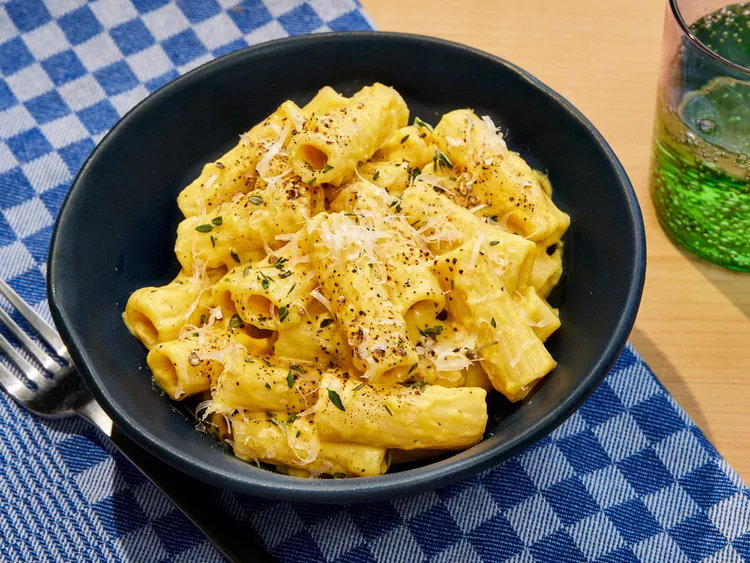

Butternut Squash Mac and Cheese

Description
Can’t wait for Trader Joe’s Butternut Squash Mac and Cheese to hit the shelves each fall? Neither can we, which is why we’ve created a copycat recipe you can enjoy year-round.
This simple, homemade version captures all the comforting, cheesy flavors of the original, but with a fresher, more robust taste. Plus, it’s easy to whip up in under an hour, making it perfect for a cozy weeknight dinner.
Ingredients
- 16 ounces uncooked rigatoni pasta
- 1 tablespoon unsalted butter
- 3 cups cubed, peeled butternut squash from 1 small squash
- 6 fresh sage leaves
- 1 teaspoon chopped fresh thyme
- 1 teaspoon kosher salt
- 1/2 teaspoon black pepper
- 3 cups whole milk
- 2 teaspoons onion powder
- 1 teaspoon garlic powder
- 1/8 teaspoon cayenne pepper
- 1/8 teaspoon freshly ground nutmeg
- 1/8 teaspoon turmeric
- 2 teaspoons Dijon mustard
- 1 cup shredded sharp cheddar cheese
- 1 cup shredded Gouda cheese
- 2 tablespoons freshly grated Parmesan cheese
Steps
- Gather all ingredients.
- Bring a large pot of salted water to a boil over high. Add pasta and cook according to package directions for al dente. Drain, reserving 1 cup of pasta cooking water; set pasta aside.
- While pasta cooks, melt butter in a large Dutch oven over medium. Add butternut squash, sage, thyme, salt, and pepper, and cook, stirring occasionally, until browned on all sides, about 6 to 8 minutes.
- Stir in milk, onion powder, garlic powder, cayenne, nutmeg, and turmeric and bring to a boil over high, stirring occasionally. Reduce heat to medium, cover, and cook, stirring occasionally, until squash is tender, about 6 minutes.
- Transfer squash mixture into a blender and add Dijon mustard. Secure lid on blender, and remove center piece to allow steam to escape. Place a clean towel over opening. Process until very smooth, about 30 seconds. (Alternatively, puree soup with an immersion blender until smooth, about 3 minutes).
- Add pasta and pureed squash mixture to Dutch oven; gently heat over medium until pasta is warmed through, about 2 minutes. Stir in Cheddar, Gouda and Parmesan and cook over low, stirring constantly, until smooth, about 1 minute. Stir in 1/4 cup of the reserved pasta cooking water. Cook, stirring often, and add remaining cooking water, 1/4 cup at a time, as needed, until sauce is creamy and clings to pasta, 2 to 3 minutes. Season with additional salt to taste.
- Divide among bowls and garnish with thyme, black pepper, and Parmesan.